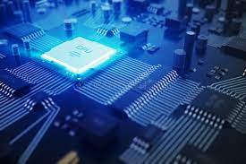

Processor:
Processor is the key component of a PC. It is also called Central Processing Unit (CPU). It can perform billions of additions or subtractions per second. Today's modern processors work in nano seconds.
In computing and computer science, a processor or processing unit is an electrical component (digital circuit) that performs operations on an external data source, usually memory or some other data stream. It typically takes the form of a microprocessor, which can be implemented on a single metal-oxide-semiconductor integrated circuit chip. In the past, processors were constructed using multiple individual vacuum tubes, multiple individual transistors, or multiple integrated circuits. Today, processors use built-in transistors. The term is frequently used to refer to the central processing unit (CPU) in a system. However, it can also refer to other coprocessors, such as a graphics processing unit (GPU). Traditional processors are typically based on silicon however, researchers have developed experimental processors based on alternative materials such as carbon nanotubes, graphene, and alloys made of elements from groups three and five of the periodic table. Transistors made of a single sheet of silicon atoms one atom tall and other 2D materials have been researched for use in processors. Quantum processors have been created; they use quantum superposition to represent bits (called qubits) instead of only an on or off state.